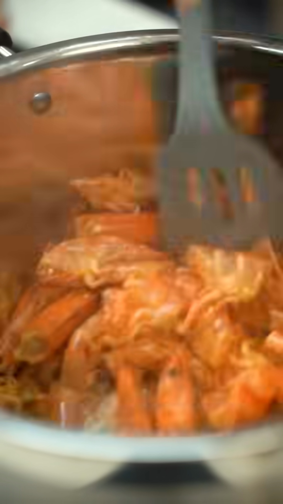
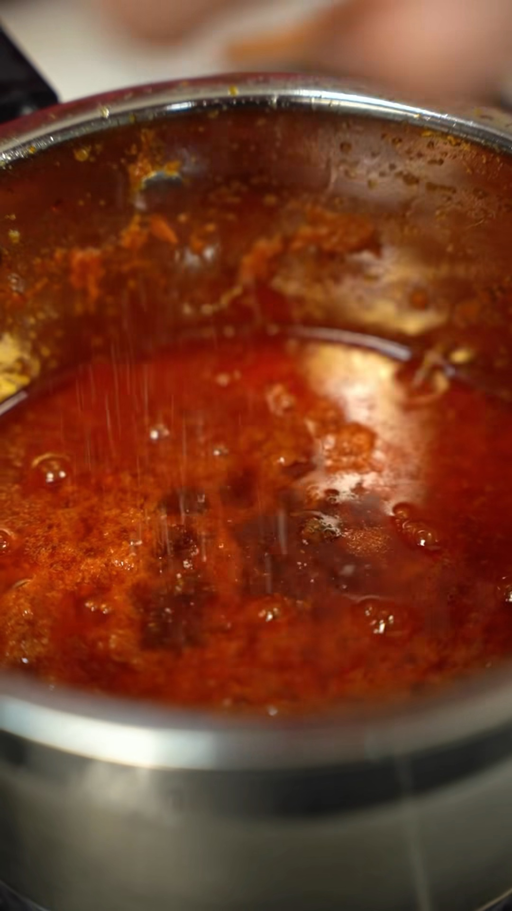
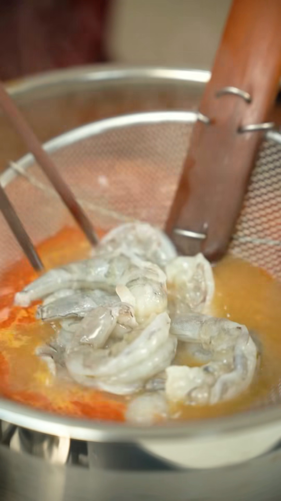
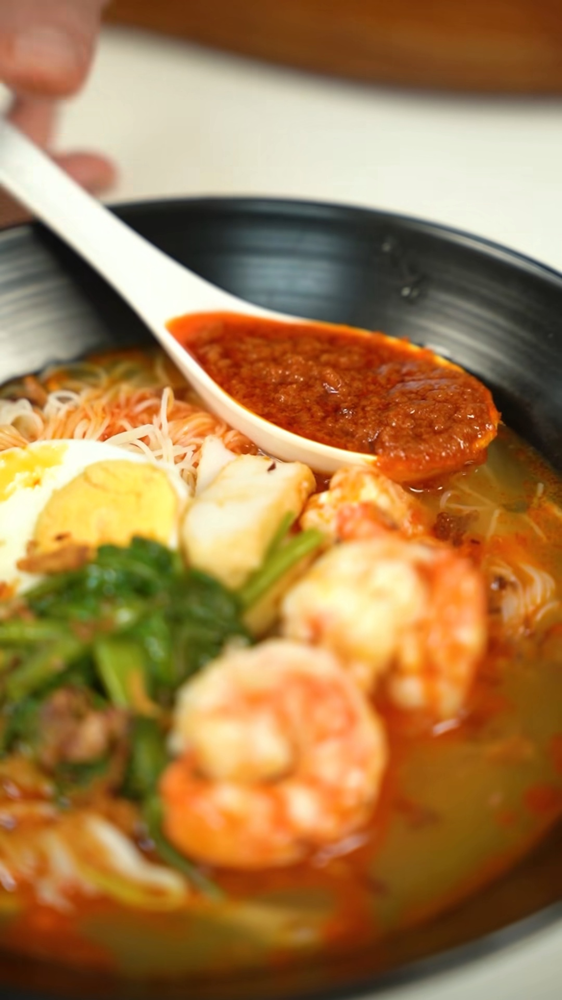

Mee Udang
Sumber dan asas catatan
- Pencipta: Jia Le Woh (Facebook; tanda pagar termasuk
#chefjia). - Pautan sumber: https://www.facebook.com/reel/1204449718462919
- Tarikh simpan: 6 Oktober 2026. Untuk kegunaan peribadi sahaja.
- Tempoh video: kira-kira 1 minit 39 saat.
- Maklumat disusun daripada kapsyen penuh, bingkai video dan transkripsi automatik audio. Transkripsi automatik boleh tersalah mengeja; perkataan yang jelas sepadan dengan bahan dan paparan video diseragamkan kepada ejaan Bahasa Malaysia.
- Kuantiti berangka di bawah diambil daripada kapsyen, bukan dianggarkan daripada gambar. Bahan tambahan yang disebut dalam audio atau kelihatan dalam hidangan diasingkan dan ditandakan [TIDAK DINYATAKAN] apabila kuantitinya tidak diberikan.
- Bilangan hidangan: [TIDAK DINYATAKAN].
- Masa penyediaan: [TIDAK DINYATAKAN].
- Masa memasak keseluruhan: [TIDAK DINYATAKAN]. Audio menyebut memasak stok selama 1 jam; ini bukan jumlah masa keseluruhan resipi.
Bahan dan kuantiti
A. Sambal — kuantiti dalam kapsyen
- Bawang putih — 20 g.
- Udang kering — 30 g.
- Cili boh — 300 g; ditulis sebagai “Chili Boh” dalam kapsyen.
- Garam — 1/2 sudu teh; kapsyen:
1/2Tsp. - Gula — 2 sudu teh; kapsyen:
2Tsp.
B. Sambal — bahan tambahan dalam penerangan audio
- Bawang merah — [TIDAK DINYATAKAN].
- Minyak untuk mengisar bahan sambal — [TIDAK DINYATAKAN].
- Minyak untuk menumis sambal — [TIDAK DINYATAKAN]; audio menyebut “sedikit minyak”, tanpa ukuran.
- Belacan — [TIDAK DINYATAKAN].
C. Stok / sup udang
Bahan ini diterangkan dalam audio, tetapi kuantitinya tidak diberikan dalam kapsyen.
- Kulit udang — [TIDAK DINYATAKAN]. Jangan andaikan kuantitinya bersamaan dengan 100 g isi udang yang disenaraikan untuk hidangan.
- Minyak untuk menumis kulit udang — [TIDAK DINYATAKAN].
- Air — [TIDAK DINYATAKAN].
- Tulang ayam — [TIDAK DINYATAKAN].
- Kaki ayam — [TIDAK DINYATAKAN].
- Sengkuang — [TIDAK DINYATAKAN].
- Sambal yang telah dimasak — separuh daripada sambal yang disediakan, mengikut penerangan audio; berat atau isipadu: [TIDAK DINYATAKAN].
- Garam tambahan untuk sup — [TIDAK DINYATAKAN].
- Gula tambahan untuk sup — [TIDAK DINYATAKAN].
Nota penting: Kuantiti garam 1/2 sudu teh dan gula 2 sudu teh dalam kapsyen diletakkan di bawah bahagian sambal. Jangan gunakan angka itu sebagai ukuran tambahan untuk sup tanpa pengesahan sumber.
D. Mee, bihun dan pelengkap
Kuantiti daripada bahagian “Bahan-Bahan Lain” dalam kapsyen:
- Bihun — 200 g; kapsyen: “Bee Hoon”.
- Mee — 200 g.
- Tauge — 80 g; kapsyen: “Taugeh”.
- Kangkung — 30 g.
- Udang — 100 g.
- Bawang goreng — [TIDAK DINYATAKAN].
Pelengkap tambahan yang disebut dalam audio / kelihatan dalam hidangan:
- Telur rebus — [TIDAK DINYATAKAN]. Cara dan tempoh merebus telur tidak diterangkan.
- Kek ikan / fish cake — [TIDAK DINYATAKAN].
- Sambal untuk dihidangkan bersama — baki sambal yang disediakan; kuantiti setiap hidangan: [TIDAK DINYATAKAN].
Keadaan bahan: Sama ada berat mee dan bihun merujuk kepada bahan kering, mentah atau selepas direbus ialah [TIDAK DINYATAKAN]. Audio menyebut menggunakan mee dan bihun yang telah direbus semasa menghidang. Cara menyediakan tauge dan kangkung sebelum dihidangkan: [TIDAK DINYATAKAN].
Langkah memasak
Urutan di bawah mengikut bahagian memasak dalam reel. Bahagian awal video ialah paparan hidangan siap, bukan permulaan langkah memasak.
1. Sediakan stok udang (sekitar 00:16–00:29)
- Masukkan minyak dan kulit udang ke dalam periuk.
- Tumis kulit udang sehingga wangi dan rangup, seperti disebut dalam penerangan audio.
- Masukkan air, tulang ayam, kaki ayam dan sengkuang.
- Biarkan stok masak selama 1 jam.
- Sukatan air, tahap api dan sama ada periuk ditutup sepanjang memasak: [TIDAK DINYATAKAN].
2. Kisar bahan sambal (sekitar 00:42–00:49)
- Masukkan udang kering, bawang putih, bawang merah dan minyak ke dalam pengisar.
- Kisar sehingga halus.
- Sama ada udang kering direndam terlebih dahulu: [TIDAK DINYATAKAN].
3. Masak sambal (sekitar 00:49–01:10)
- Masukkan sedikit minyak dan belacan ke dalam periuk; tumis.
- Masukkan pes bahan yang telah dikisar.
- Tumis sehingga wangi.
- Masukkan cili boh.
- Teruskan menumis sehingga pecah minyak.
- Masukkan garam dan gula, kemudian masak dan kacau sehingga sebati.
- Tempoh menumis, tahap api dan sukatan belacan: [TIDAK DINYATAKAN].
Nota ketepatan audio: Transkripsi automatik sekitar 01:03–01:07 tidak cukup jelas pada frasa sebelum “garam dengan gula”. Oleh itu, tiada penambahan belacan kali kedua dicatatkan sebagai langkah pasti. Belacan pada permulaan tumisan disebut lebih jelas dan kelihatan dimasukkan ke dalam periuk.
4. Siapkan sup (sekitar 01:10–01:20)
- Tapis stok yang telah dimasak.
- Masukkan separuh sambal yang telah disediakan ke dalam stok.
- Masukkan garam dan gula untuk sup; kuantiti kedua-duanya [TIDAK DINYATAKAN].
- Kacau dan masak sehingga sebati.
5. Masak udang (sekitar 01:20–01:25)
- Rebus udang di dalam sup sehingga masak.
- Video menunjukkan udang dimasukkan menggunakan penapis berjaring yang dicelup ke dalam sup.
- Tempoh merebus udang: [TIDAK DINYATAKAN].
6. Susun dan hidangkan (sekitar 01:25–01:39)
- Masukkan mee dan bihun yang telah direbus ke dalam mangkuk atau pinggan hidangan.
- Tambahkan telur rebus, kek ikan, tauge, kangkung dan udang.
- Tuangkan sup udang.
- Akhir sekali, taburkan bawang goreng dan hidangkan bersama sambal.
- Tempoh merebus mee dan bihun serta kuantiti setiap bahan untuk satu hidangan: [TIDAK DINYATAKAN].
Petua dan perkara penting daripada video
- Tumis kulit udang sehingga wangi dan rangup sebelum memasukkan air dan bahan stok.
- Masak stok selama 1 jam, mengikut penerangan sumber.
- Kisar bahan sambal sehingga halus.
- Tumis pes sehingga wangi, kemudian tumis cili boh sehingga pecah minyak.
- Tapis stok sebelum menambah sambal dan menyiapkan sup.
- Masukkan separuh sambal ke dalam sup; sambal juga dihidangkan bersama hidangan pada akhir video.
- Rebus udang dalam sup sehingga masak, seperti langkah yang ditunjukkan.
- Pembukaan video menyebut rasa sup yang kaya dengan umami udang serta mee dan bihun yang menyerap sup. Hidangan dicadangkan untuk perjumpaan Tahun Baharu Cina, dengan penyediaan menggunakan satu periuk.
- Tiada petua penyimpanan, tempoh tahan sambal, penggantian bahan atau sukatan air diberikan: [TIDAK DINYATAKAN].
Peralatan dan segmen promosi (sekitar 00:29–00:42)
- Peralatan yang kelihatan: periuk, pengisar, sudip, senduk dan penapis berjaring.
- Video mempromosikan periuk Jaya Mata dengan label SUS304 Stainless Steel dan 5 Layer Composite Base pada pembungkusan.
- Penerangan menyebut ketahanan, tahan panas dan mudah dibersihkan. Ini ialah dakwaan promosi dalam sumber, bukan penilaian bebas.
- Pembungkusan turut menunjukkan nama “Covered Saucepan” dan “Covered Casserole”. Saiz periuk yang diperlukan untuk resipi: [TIDAK DINYATAKAN].
Lima gambar penting
Gambar diambil terus daripada bingkai reel tanpa tindihan antara muka Facebook. Masa ialah kedudukan dalam video, bukan tempoh memasak.
1. Menumis kulit udang — 00:21

2. Mengisar bahan sambal — 00:48
3. Sambal pecah minyak — 01:06

4. Merebus udang dalam sup — 01:21

5. Hidangan siap bersama sambal — 01:36

Kapsyen bahan asal untuk semakan
Bahagian bahan dalam kapsyen sumber ditranskripsikan di bawah; ejaan dan unit asal dikekalkan:
Bahan-bahan （Sambal）
Bawang Putih 20g
Udang Kering 30g
Chili Boh 300g
Garam 1/2Tsp
Gula 2Tsp
Bahan-Bahan Lain
Bee Hoon -200g
Mee - 200g
Taugeh -80g
Kangkung -30g
Bawang Goreng
Udang -100g
Ringkasan batas maklumat: Kapsyen tidak menyenaraikan semua bahan yang diterangkan dalam audio. Kuantiti bahan stok, bawang merah, minyak, belacan, telur, kek ikan serta garam dan gula tambahan untuk sup tidak diberikan. Semua kekurangan tersebut ditandakan [TIDAK DINYATAKAN], tanpa meneka sukatan.